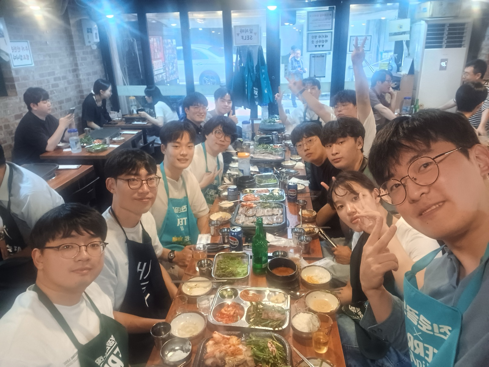
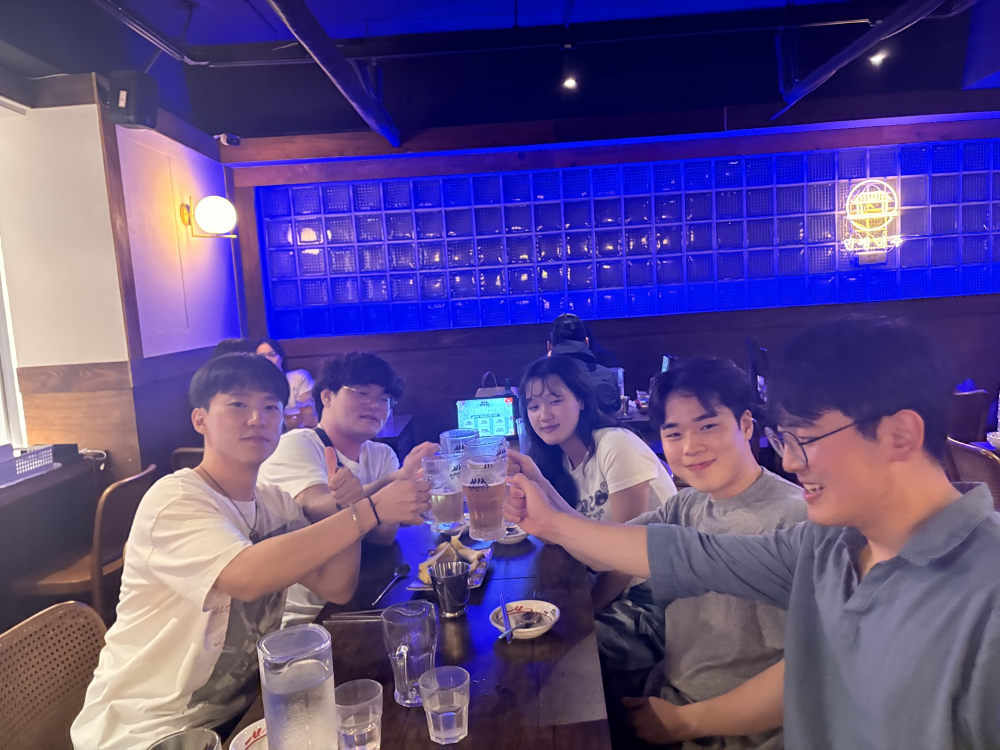
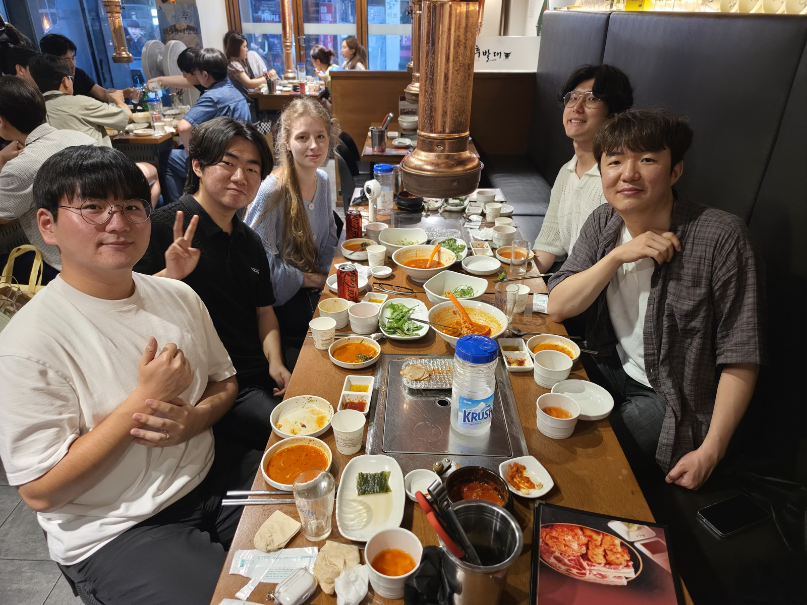
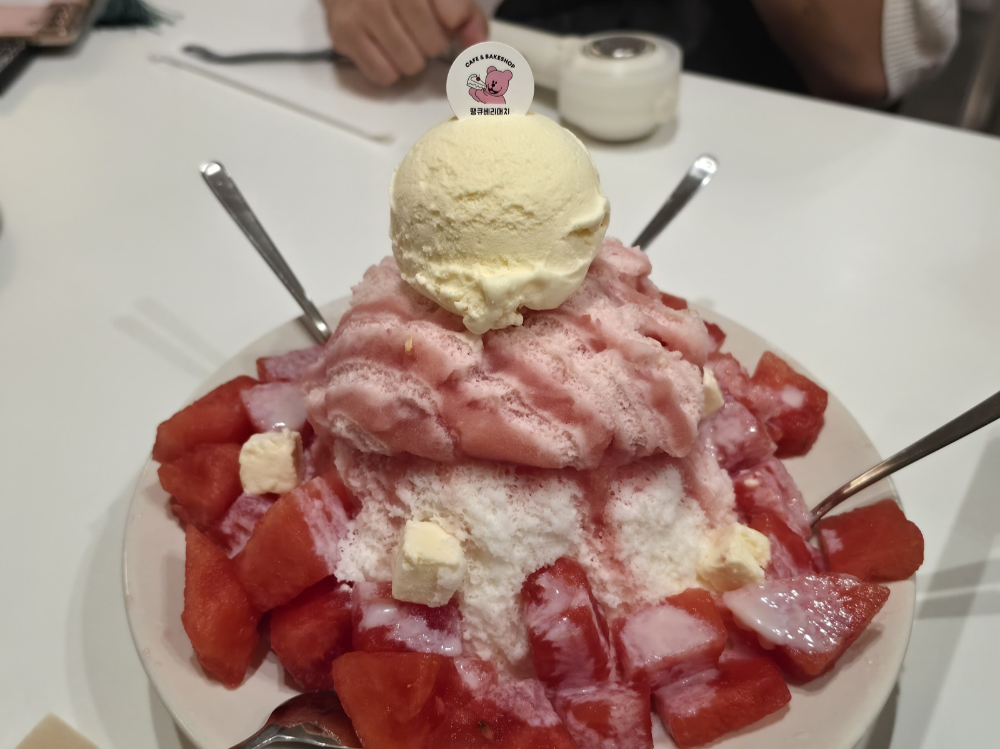
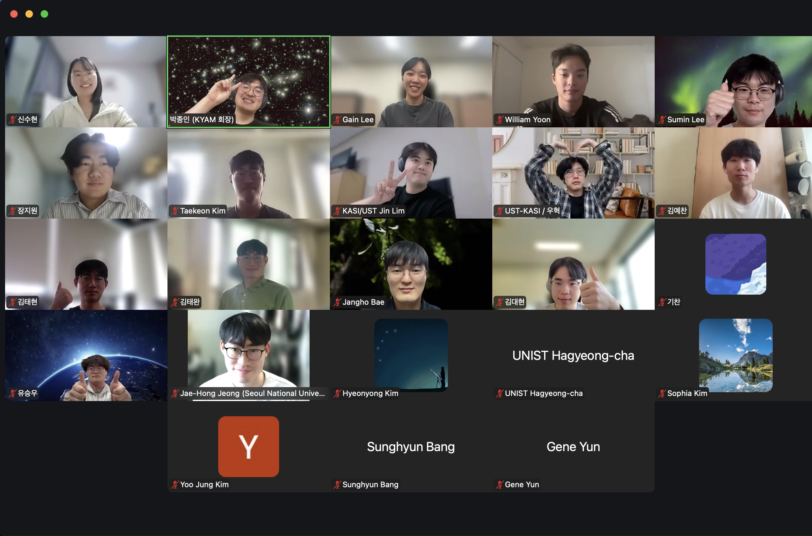
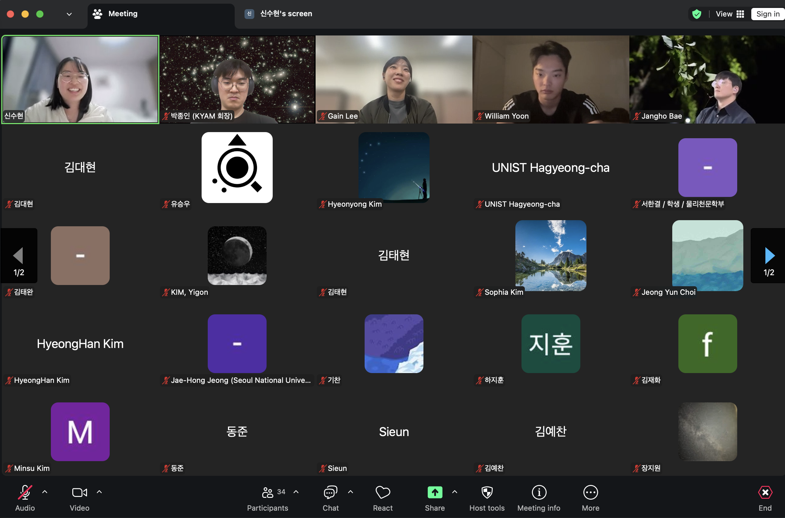
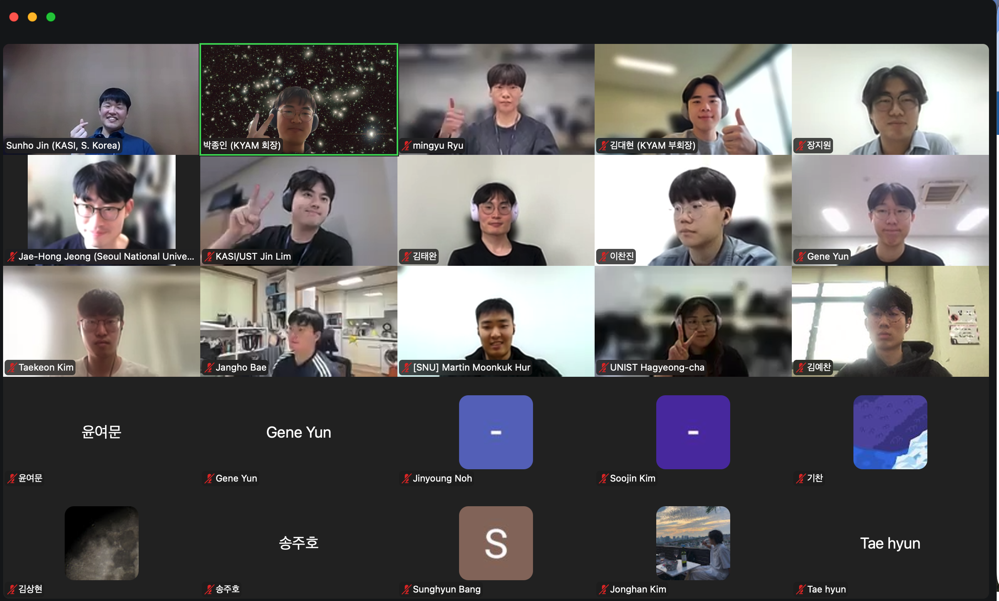

2026 KYAM Seoul Area Meetup
12 attendeesThe 2026 KYAM Seoul area meetup was a great success with 12 participants. 🎉 Members based in the Seoul area gathered to talk about everything from research to everyday life and to get to know one another better. We will keep organizing regional meetups as a space for members to connect.


2026 KYAM Central Region Meetup
Regional meetupThe KYAM central region meetup also wrapped up successfully. Thank you to everyone who joined — we hope it was a chance to share all kinds of stories and grow closer as a community. We look forward to your continued interest in our upcoming events.


2nd YAM Colloquium 2026
39 attendeesThe second YAM Colloquium of 2026 was held online. We invited Dr. Suhyun Shin, the 2021 YAM president, who walked the path from astronomy into industry, to share an honest account of life after leaving academia. With 39 members attending, this became the most attended YAM Colloquium to date, and lively Q&A about industry careers followed.

1st YAM Colloquium 2026
26 attendeesThe first YAM Colloquium of 2026 was held online. We invited Dr. Sunho Jin from the Korea Astronomy and Space Science Institute (KASI), who shared his journey in developing polarimetric observing instruments and offered tips and experiences on the astronomer job search. 26 members attended and engaged in active Q&A.


2026 KAS Spring Meeting — KYAM Division Session
34 attendeesThe KYAM division session was held at the 2026 KAS Spring Meeting. 34 young astronomers attended for the introduction of the 25th executive team, an overview of planned activities, and time for members to connect. The session concluded with a successful after-party.